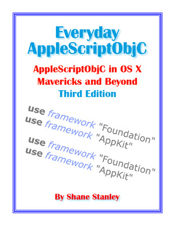

Master AppleScriptObjC
in Mavericks
And Beyond, 3rd Edition
AppleScriptObjC — the ability to call on the Cocoa frameworks using AppleScript — has become a whole lot more accessible. It's no longer something just for those who want to build complex interfaces in Xcode, or those who want to build Cocoa-based applets. When Apple introduced AppleScriptObjC-based script libraries in Mavericks, AppleScriptObjC became an everyday tool, conveniently callable from any and every script. Yosemite went a step further: every script can include AppleScriptObjC code directly. And El Capitan raises the bar again, with extended bridging of classes.
Everyday AppleScriptObjC, Third Edition is an introduction to writing AppleScriptObjC. It walks you through the mechanics, gets you over the initial learning hump, and then takes you through a series of practical examples of how to use some of the most important classes. All the code samples are supplied with the book, which is published in PDF form.
This edition covers the changes in El Capitan, as well as how to maintain backwards capability. It includes several new chapters, with examples of basic interface scripting, and has been thoroughly revised and expanded.
With AppleScriptObjC you have access to a range of functions that previously required multiple applications and scripting additions. And by writing the code yourself, or modfying code written by others, you have control and security of mind.
Learn how to manipulate text in ways beyond AppleScript's native ability, with things like access to regular expressions. Format numbers and dates so you never have to worry about scientific notation again. Have access to quick, simple sorting of lists, or more complex options and filters. Manage your filing without the slowness of the Finder or the vagaries of System Events.
Everyday AppleScriptObjC, Third Edition is aimed at the scripter who wants to do more. It only scratches the surface of what is available, but it introduces you to the techniques you need to explore further. It explains what is bridged between AppleScript and Cocoa, and what is not. It explains how to make sense of the Cocoa documentation. It looks at simple handlers of a few lines, as well as more complex techniques such as building "smart" script objects, and having library handlers call back to the originating script. And it does so in an approachable way, with explanations written for scripters, by a scripter.
Everyday AppleScriptObjC, Third Edition is by Shane Stanley, author of 'AppleScript Explored', the guide to using AppleScriptObjC in Xcode. It is available now for $US15.00.
This book is the must-have guide for developing ultra-powerful AppleScript apps — BUY YOUR COPY NOW!